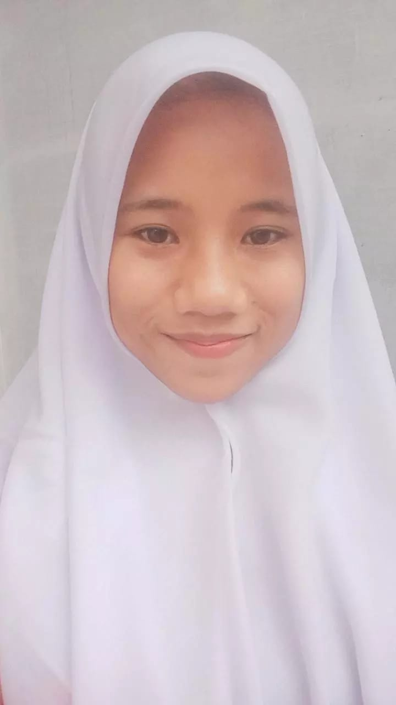

SMKN 9 Medan adalah salah satu sekolah menengah kejuruan negeri yang terletak di kota Medan, Sumatera Utara, Indonesia. Sekolah ini memiliki fokus pada pendidikan kejuruan yang dirancang untuk mempersiapkan siswa untuk dunia kerja atau untuk melanjutkan pendidikan tinggi dalam bidang yang sesuai.
Desain Komunikasi Visual adalah salah satu cabang ilmu desain yang mempelajari konsep komunikasi melalui berbagai media yang dapat berupa gambar, tatanan huruf, video, media interaktif, dan media visual lainnya agar gagasan yang disampaikan dapat diterima dengan baik, lebih menarik, atau sesuai dengan kebutuhan lainnya ketika diterima oleh penerima pesan.
jurusan yang mempelajari dan mendalami pengembangan perangkat lunak, mulai dari pembuatan, pemeliharaan, manajemen organisasi pengembangan perangkat lunak, dan manajemen kualitas. Selain itu, jurusan ini juga berkaitan dengan software komputer, seperti pembuatan website, aplikasi, game, dan semua yang berhubungan dengan programmer.
Teknik Komputer Jaringan merupakan ilmu berbasis Teknologi Informasi dan Komunikasi terkait kemampuan algoritma, dan pemrograman komputer, perakitan komputer, perakitan jaringan komputer, dan pengoperasian perangkat lunak, dan internet. Teknik komputer, dan jaringan juga membutuhkan pemahaman di bidang teknik listrik, dan ilmu komputer sehingga mampu mengembangkan, dan mengintegrasikan perangkat lunak, dan perangkat keras.
Pekerjaan sosial adalah profesi berbasis praktik dan disiplin akademis yang mempromosikan perubahan dan pengembangan sosial, kohesi sosial, dan pemberdayaan dan pembebasan orang. Prinsip-prinsip keadilan sosial, hak asasi manusia, tanggung jawab kolektif, dan penghormatan terhadap perbedaan merupakan hal yang sentral dalam pekerjaan sosial.
Jurusan Animasi lebih fokus dalam mempelajari teori dan teknik dalam membuat animasi 2D dan 3D, animasi film, animasi game, dan bidang lainnya yang menggunakan konten animasi.
Broadcasting / penyiaran adalah sebuah proses pengiriman sinyal ke berbagai lokasi secara bersamaan baik melalui satelit, radio, televisi dan media lainnya. Broadcasting merupakan salah satu bagian dari ilmu komunikasi. Broadcasting sendiri lebih memfokuskan ke bidang penyiaran. Dan orang yang melakukan penyiaran disebut broadcaster / penyiar.
© Ibna Aini XII RPL 4
